install.packages("rmarkdown")
library(rmarkdown)Ce tutoriel est adapté de Getting started with R Markdown du site Our Coding Club.
Introduction
Qu’est-ce que R Markdown ?
R Markdown vous permet de créer des documents, notamment des rapports de vos analyses. Les personnes qui liront votre code doivent pouvoir facilement comprendre et reproduire votre analyse : c’est la reproductibilité.
Vous pouvez créer un document R Markdown et le partager, ou vous en servir à titre personnel pour garder une trace des étapes et des résultats d’une analyse.
R Markdown permet d’afficher le code utilisé et les résultats obtenus (graphiques, tables, …) ainsi que des commentaires explicatifs, un peu à la manière d’un cahier de laboratoire.
R Markdown utilise la syntaxe Markdown, un langage markup qui propose des outils pour créer des documents avec des en-têtes, des images, des liens, …
Un document Markdown peut être converti en différents formats comme du html ou du pdf.
Lorsque vous créez un fichier R Markdown (.Rmd), vous utiliserez la syntaxe Markdown aux côtés de blocs de code écrits en R (ou d’autres langages de programmation). Ce fichier est ensuite compilé : le format Markdown et le code sont évalués, et un fichier de sortie (html, pdf, …) est généré.

Pré-requis
Si vous n’avez pas suivi les autres tutoriels, vous pouvez créer un projet RStudio et une arborescence.
Pour utiliser RMarkdown dans RStudio, installez et chargez le package rmarkdown :
Créer un document R Markdown
Ouvrir un nouveau fichier R Markdown
Pour créer un nouveau document R Markdown (.RMd), cliquez sur File > New File > R Markdown …. Vous pouvez également cliquer sur le symbole Plus et choisir R Markdown….
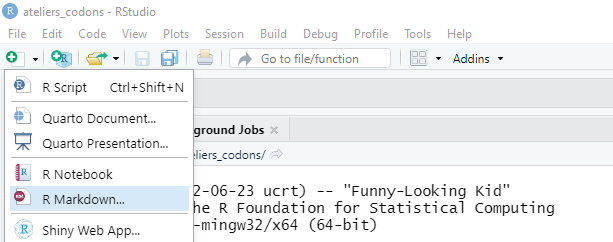
Dans la fenêtre qui s’ouvre, laissez les paramètres par défaut et cliquez sur Create Empty Document (en cliquant sur OK vous créerez un document pré-rempli).
Votre document vide s’ouvre dans la fenêtre en haut à gauche de RStudio.


Ajouter un en-tête
Un document Rmd débute par une section d’en-tête encadrée par trois tirets et qui contient généralement les éléments suivants :
un titre
les auteurs
la date
le format de sortie
Voici un exemple d’en-tête à insérer en haut de votre ficher .Rmd :
---
title: "Pingouins de l'archipel Palmer"
author: Jonathan Kitt
date: 2022-11-14
output: html_document
---
Le YAML
Cet en-tête s’appelle un YAML : Yet Another Markup Language
Sauvegardez votre fichier Rmd en cliquant sur l’icône disquette (ou en utilisant la combinaison Ctrl + S). Choisissez un nom pour votre fichier et placez-le dans votre dossier docs.
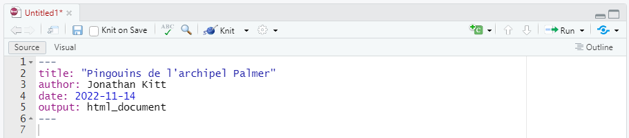

Compiler un document R Markdown
Pour compiler votre fichier Rmd et générer le document au format choisi (html dans notre cas), cliquez sur le bouton Knit : le document s’ouvre dans une nouvelle fenêtre.
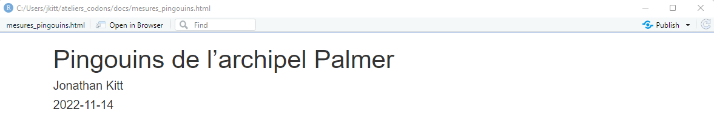
Raccourci clavier : compiler un fichier Rmd
Pour compiler un fichier Rmd, utilisez la combinaison Ctrl + Shift + K
Dans l’explorateur de fichiers vous pouvez remarquer qu’un fichier mesures_pingouins.html a été ajouté dans le répertoire docs : il s’agit du fichier html issu de la compilation du fichier Rmd. En cliquant sur le nom de ce fichier vous aurez le choix entre l’ouvrir dans l’éditeur ou dans un navigateur internet.

Prévisualiser le document
Par défaut, lorsque vous compilez un fichier Rmd, le document généré s’ouvre dans une nouvelle fenêtre. Vous pouvez choisir d’afficher cette pré-visualisation directement dans l’onglet Viewer en bas à droite de RStudio en cliquant sur la roue à droite du bouton Knit puis sur Preview in Viewer Pane.

Les bases de R Markdown
Pour mettre en forme votre texte, vous allez utiliser la syntaxe markdown.
Editeur visuel
Vous pouvez modifier votre fichier Rmd à la manière d’un éditeur de texte à l’aide de l’éditeur visuel : cliquez sur le bouton Visual en haut du fichier.
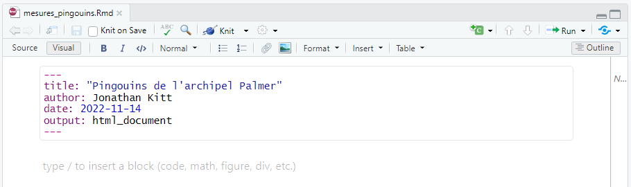
Insérer des titres
Pour insérer un titre, utilisez un #. Vous pouvez utiliser différents niveaux en ajoutant des # :
# Niveau 1
## Niveau 2
### Niveau 3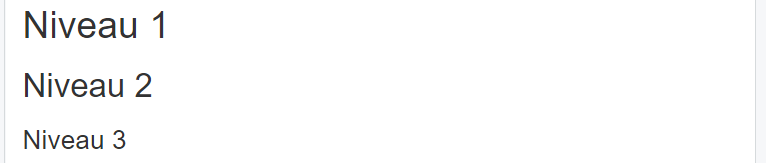
Insérer une ligne horizontale
Pour insérer une ligne horizontale dans votre texte, utilisez trois étoiles ***.
Mettre en forme le texte
Pour mettre en forme votre texte, utilisez les conventions suivantes :

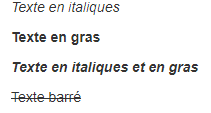
Insérer du texte au format code
Vous pouvez insérer du texte au format code :


Insérer un lien
Vous pouvez insérer un lien dans votre texte :

Insérer des listes
Vous pouvez insérer une liste à puces :

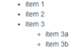
Ou une liste numérotée :


Insérer un tableau
Vous pouvez insérer un tableau en le “dessinant” :
des tirets
-pour déparer l’en-tête du reste du tableaudes barres verticales
|pour délimiter les colonnes
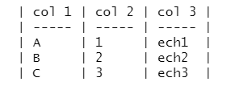
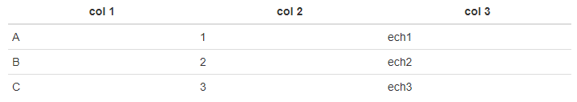
Pour aligner le texte, utilisez deux points : :


Insérer une citation
Vous pouvez insérer une citation :
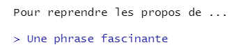

Notation mathématique
Vous pouvez insérer du texte en exposant ou en indice :

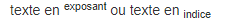
Equation mathématique
La syntaxe pour insérer une équation mathématique se base sur LaTeX :
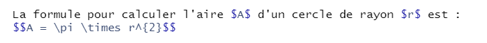
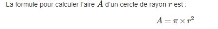
Insérer une image
Vous pouvez insérer une image dans votre fichier :
Chemins vers les fichiers
Lorsque que vous indiquez un chemin vers un fichier dans RMarkdown, le dossier “racine” n’est plus votre répertoire de travail (votre projet) mais le dossier dans lequel se trouve le fichier .Rmd, dans le cas présent le répertoire docs/.
Il faut donc revenir en arrière d’un niveau, à l’aide de ../.
Lorsque vous naviguez dans une arborescence à l’aide de la ligne de commande, . indique le répertoire de travail et .. le répertoire situé un niveau au-dessus dans votre arborescence.
{width="100%"}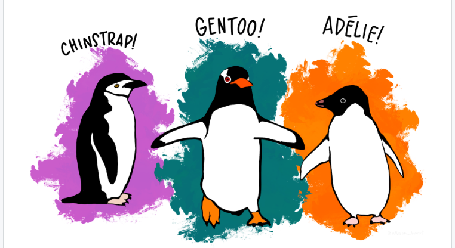
Rédiger un document de façon dynamique
Lorsque vous rédigez un rapport, vous pouvez le faire “en dur”, c’est-à-dire inscrire directement dans le texte toutes les valeurs numériques, les résultats de calculs, insérer des graphiques générés séparément, …
Cette façon de procéder présente un désavantage majeur : votre document ne sera valable qu’une seule fois pour une seule analyse (vous pourrez toujours le ré-utiliser en remplaçant les valeurs numériques). De plus, le risque d’erreur est non négligeable : coller des valeurs numériques copiées depuis un autre logiciel peut créer des mauvaises surprises.
Pour pallier à ces différents problèmes, RMarkdown vous permet de rédiger votre fichier de façon “dynamique”. Vous pouvez ainsi importer les fichiers nécessaires à votre analyse, effectuer des calculs et générer des graphiques à l’aide de code R qui sera compilé.
Votre fichier Rmd pourra ainsi être modifié et ré-utilisé pour des analyses similaires sur d’autres jeux de données.
Insérer un bloc de code R
Commençons par importer notre jeu de données à l’aide d’une ligne de code insérée dans un bloc de code. Dans RMarkdown, un bloc de code est encadré par trois accents ```.
Sur la première ligne on indique entre accolades qu’il s’agit de code R :
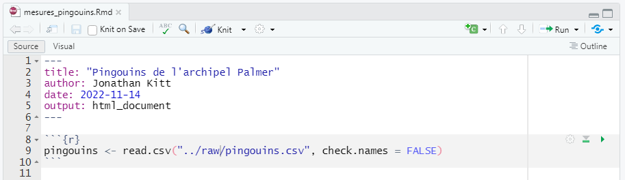
Raccourci clavier : insérer un bloc de code
Pour insérer un bloc de code, utiliser la combinaison Ctrl + Alt + I
Vous pouvez exécuter ce code comme vous le feriez dans un script classique en cliquant sur la flèche verte à droite du code (ou en vous plaçant sur la ligne et en utilisant la combinaison Ctrl + Entrée).
Le fichier a bien été importé et stocké dans l’objet pingouins visible dans l’environnement.
Lorsque vous compilez votre fichier Rmd, le code est exécuté et s’affiche dans votre document de sortie (au format html) :
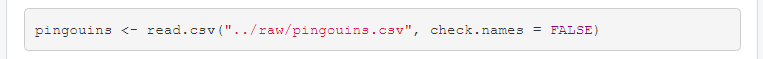
Lorsque vous insérez un bloc de code, des paramètres vous permettent de préciser si le code doit être affiché ou non, exécuté ou non, …
Ces options sont à placer dans les accolades : {r eval=FALSE} par exemple.
| option | par défaut | effet |
|---|---|---|
| eval | TRUE | évaluer le code et inclure le résultat |
| echo | TRUE | afficher le code avec le résultat |
| warning | TRUE | afficher les messages d’avertissement |
| error | FALSE | afficher les messages d’erreur |
| message | TRUE | afficher les messages |
Insérer du code
Nous avons vu plus haut comment insérer du texte au format code.
Vous pouvez exécuter le code en ajoutant un r :
Transformer un script en .Rmd
Pour mettre en pratique ce que nous avons jusqu’ici, nous allons transformer le script écrit pour l’analyse des données (voir ce tutoriel) en fichier .Rmd.
Pour télécharger ce script, cliquez ici et sauvegardez-le dans le dossier scripts de votre répertoire de travail.
Introduction
Commençons par rédiger une courte introduction :
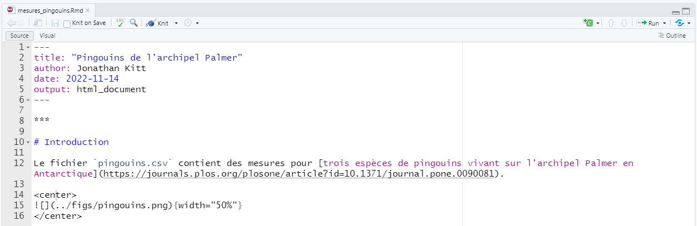
Nous utilisons des balises
htmlpour centrer l’image :<center> et </center>Nous ajustons la largeur de l’image à l’aide du paramètre
{width="50%"}
Importer les données
Pour utiliser les données dans notre fichier Rmd nous devons l’importer : il sera alors disponible dans notre environnement.
Le chemin vers le fichier pingouins.csv ne sera pas le même pour un utilisateur utilisant notre document. Nous insérons ainsi deux blocs de code :
importer les données pour les utiliser dans le fichier
Rmdexpliquer comment importer les données pour un autre utilisateur

Explorer et nettoyer les données
Description des données
Les données brutes étant à présent disponibles dans notre environnement, nous pouvons les explorer de façon dynamique et afficher les résultats dans notre document :
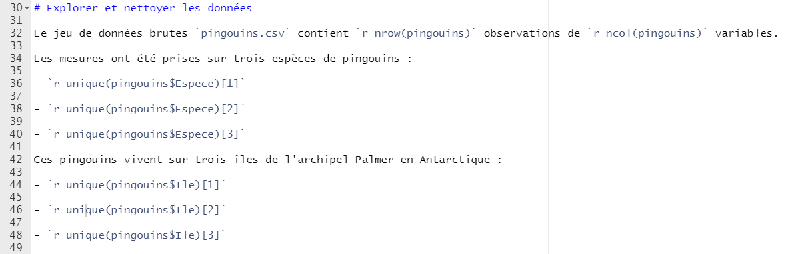
Nettoyage des données
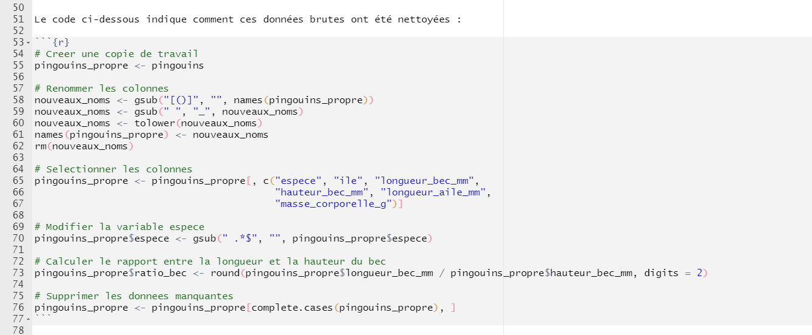
Comme nous l’avions fait pour importer les données, nous utilisons deux blocs de code pour exporter les données nettoyées :